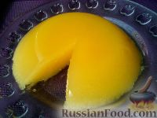
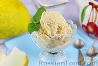
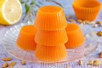

In English
Дыня - Родиной дыни считается Средняя Азия и Малая
Азия. Дыня — тепло- и светолюбивое растение,
устойчивое к засолению
почвы и засухе.
+375(12)345-67-89
Пищевая ценность
Дыня — продукт, богатый питательными веществами при низком содержании калорий
Дыня — богатый источник витамина С, которые защищают огранизм от вирусов и инфекций
Дыня - богатый источник витаминов который уменьшает риск сердечно-сосудистых заболеваний
Рецепты
Дынный мусс
Ингедиенты
Мор. с дыней
Ингедиенты
Мармелад из дыни
Ингедиенты
Сорта
Плюсы:
Минусы:
Среднеранний пластичный гибрид дыни. Съемная спелость наступает через 75 – 80 дней после всходов. Тыквина округлая, при полной спелости желтая, с частой сеткой, массой 1 – 1,5 кг. Мякоть кремовая, нежная, маслянистая, средней толщины, сочная, сладкая, медовая, с сильным ароматом, со средней семенной камерой. Дыня Злато скифов F1 адаптирована к выращиванию во всех регионах. Дает обилие мужских цветков и служит хорошим опылителем для других гибридов и сортов. Хорошо набирает сахар даже в прохладное и влажное лето.
Отзывы
Петя
Дынька ФАХ сладкая как первая любоф, всегда бы ел. Жаль зубов уже маловато...
Артем
Очень вкусно, всем советую, и по вкусу вкусно и по сути вкусно!
Хазбик
Дынька бомба, честно говоря